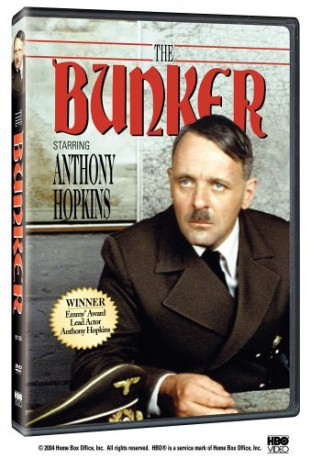

#3290 Der Führerbunker
Alternativ: Der Bunker (Englischer Titel)
 
 IMDB-Wertung: 7.0 / 10
IMDB-Wertung: 7.0 / 10  Metascore: 0
Metascore: 0 
In 1945, The Third Reich is in its death throes with the Allies relentlessly attacking the capital city of Berlin. Its Fuehrer, Adolf Hitler, retreats into his fortified bunker in Berlin with his senior staff. There, gripped with both delusions of grandeur and despair, Hitler commands a hopeless last stand with resources existing largely in his own mind. While resisting the pleas of rational minions like Albert Speer, basic reality finally comes unavoidable. With that, Hitler and his fanatical fellows prepare for their own end even as their grandiose dreams are becoming a smoking ruin above.
Jahr: 1981
Dauer: 151 Minuten
FSK:
Land: Frankreich Studio: Koch MediaTonspuren:
Untertitel:
Auflösung: 720p (1232x720) Größe: 4648 MB
Genre: Drama, Krieg, Geschichte
Regisseur: George Schaefer
Drehbuch: John Gay, James P. O'Donnell
Soundtrack: Brad Fiedel
Darsteller:
 Anthony Hopkins als Adolf Hitler
Anthony Hopkins als Adolf Hitler Richard Jordan als Albert Speer
Richard Jordan als Albert Speer- Cliff Gorman als Joseph Goebbels
 James Naughton als James O'Donnell
James Naughton als James O'Donnell Michael Lonsdale als Martin Bormann
Michael Lonsdale als Martin Bormann Martin Jarvis als Johannes Hentschel
Martin Jarvis als Johannes Hentschel Michael Kitchen als Rochus Misch
Michael Kitchen als Rochus Misch Piper Laurie als Magda Goebbels
Piper Laurie als Magda Goebbels- Susan Blakely als Eva Braun
 Jane Carr als Greta Hentschel
Jane Carr als Greta Hentschel Georges Corraface als Gard SS #1
Georges Corraface als Gard SS #1- Julian Fellowes als Col. von Below
 Edward Hardwicke als Dieter Stahl
Edward Hardwicke als Dieter Stahl Barry Jackson als Krebs
Barry Jackson als Krebs- John Paul als Gen. Wilhelm Keitel
 Robert Pugh als Turnow
Robert Pugh als Turnow Michael Sheard als Heinrich Himmler
Michael Sheard als Heinrich Himmler- Andrew Ray als Otto Günsche
- Robert Austin als Wagner
- Geoffrey Bateman als Riebold
- Graham Bishop als Helmut Goebbels
 Kevin Bishop als Themmer
Kevin Bishop als Themmer- Nathalie Boulmer als Elga Goebbels
- Yves Brainville als Gen. Hans Guderian
 Michael Culver als Gen. Mohnke
Michael Culver als Gen. Mohnke- Larry Dann als Moss
- Erick Desmarestz als Gard SS #2
- Max Douchin als Russian guard
- Patrick Floersheim als Henderson
- Peggy Frankston als Frau Speer
- Steve Gadler als SS Soldier
- Frank Gatliff als Dr. Schenck
- Alison Glennie als Maria Misch
- Robert Grange als Kempka
- Daniel Groheim als Intendant
- Sharon Gunning als Hilde Goebbels
- Terrence Hardiman als Gen. Fegelein
- Karl Held als Hans Baur
- Diana Higbee als Hedde Goebbels
- Anne Kazatzker als Mrs. Shroeder
- Jeffrey Kime als Gard SS #3
- David King als Hermann Goering
- Lola Lecerf als Heidi Goebbels
- Jean-Marie Lemaire als Sentinelle
- Lisa Marlowe als Holde Goebbels
- Sarah Marshall als Mrs. Junge
- Gerald Morales als Goering's assistant
- Jean-Claude Mounier als Young Hitlerien
- Morris Perry als Dr. Haase
- Georges Roiron als Planton
Datei: X:\1981\Führerbunker, Der (1981, FSK, 1232x720).mkv seit 03.03.2016
Festplatte: HD 1980-1986
 Es gibt insgesamt 33 Filme in der Gruppe '1981'
Es gibt insgesamt 33 Filme in der Gruppe '1981'